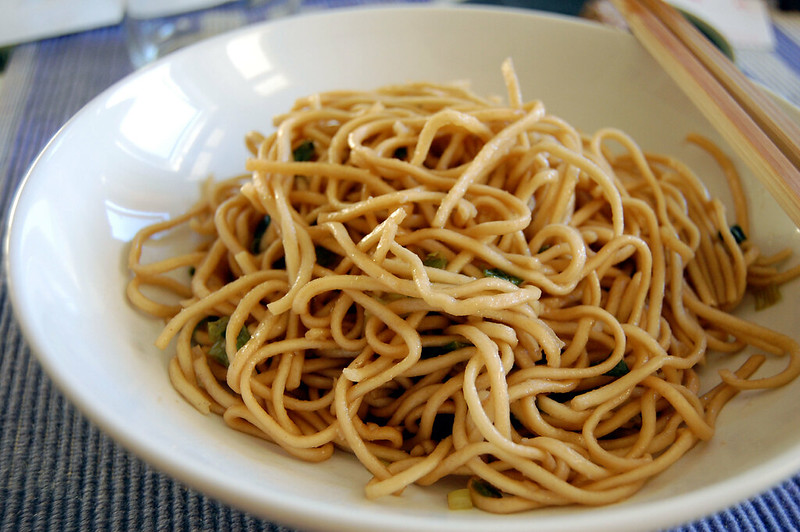

Home
Garlic Noodles

Photo by su-lin on Flickr
Description
These garlic noodles are deceivingly simple, yet devastatingly delicious. Garlic noodles were invented back in the '70s at a restaurant in San Francisco called Thanh Long. Usually served with roasted Dungeness crab, the recipe is a very closely guarded family secret, but after lots of investigation, and even more experimentation, I think this is very close.
Ingredients
For the Secret Sauce:
- 2 tablespoons soy sauce
- 1 tablespoon oyster sauce
- 2 teaspoons Worcestershire sauce
- 2 teaspoons fish sauce
- 1/4 teaspoon sesame oil
- 1 pinch cayenne pepper
For the Noodles:
- 4 tablespoons unsalted butter
- 8 cloves garlic, minced
- 6 ounces spaghetti
- 1/4 cup finely grated Parmigiano-Reggiano cheese
- 1 tablespoon chopped green onion, or to taste
- 1 pinch red pepper flakes
Steps